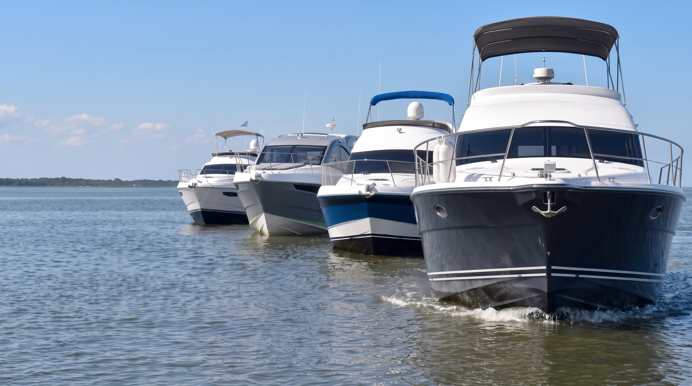

Yates Flybridge
Yates Flybridge
PREVEZA 62
20.60 MNave Insignia de Máximo Porte, 2.300 HP y Lujo Residencial
Manga5.15 m
Combustible4.000 L
Habitabilidad3 Cam / 2 Baños

Form follows water. Veinte metros de supremacía hidrodinámica, confort residencial y poderío oceánico en el Río de la Plata.

Estilo europeo, líneas contemporáneas y una inmensa superficie vidriada. Un barco para vivir a bordo.

Techo rígido integrado, perfiles afilados y un cockpit social que se funde con la planchada de popa.

Roble de cape, cueros ecológicos y una superficie vidriada que inunda de luz natural todo el interior.

De sport cruisers a yates flybridge, cada Custon nace en nuestro astillero de San Fernando. Descubra el modelo que mejor se adapta a su forma de navegar.
Explorar los modelosDiez modelos construidos artesanalmente en San Fernando. Elija una categoría o abra la ficha técnica extendida para examinar planos, comodidades y equipamiento de serie.
Yates Flybridge
Nave Insignia de Máximo Porte, 2.300 HP y Lujo Residencial
 Yates Flybridge
Yates Flybridge
Marcado Estilo Europeo para Vivir a Bordo con Confort Supremo
 Hard Top Coupé
Hard Top Coupé
Líneas Afiladas, Techo Rígido y Amplitud Social Integrada
 Hard Top Coupé
Hard Top Coupé
Superficie Vidriada Panorámica y Revestimientos en Roble de Cape
 Yates Flybridge
Yates Flybridge
Crucero Clásico con Flybridge, Gran Altura y Doble Salón
 Sport Cruisers
Sport Cruisers
El Éxito Náutico: Gran Camarote en L, Termotanque y 3 Camas
 Sport Cruisers
Sport Cruisers
Potente Motorización Fuera de Borda y Habitabilidad Familiar
 Sport Cruisers
Sport Cruisers
Cockpit Extendido, Conejera a Media Eslora y Motorización Dentro/Fuera
 Hard Top Coupé
Hard Top Coupé
Techo Rígido, Planchada de 1.30 m y Ambiente Luminoso
 Sport Cruisers
Sport Cruisers
Day Cruiser Ágil, Camarote Compartimentado y Navegación Dócil
Inspirado en el programa Sur Mesure de Bugatti, Astillero Custon concibe cada unidad como una obra naval irrepetible. No producimos en masa: cada armador define los parámetros hidrodinámicos, las maderas nobles, el tono del gelcoat del casco y las texturas de la tapicería italiana.
En nuestro varadero de San Fernando, la artesanía de resina isoftálica aplicada a mano convive con el cálculo de estructuras navales y la ebanistería sobre roble de cape estufado.


Resinas isoftálicas de alta barrera osmótica con pigmentación personalizada en autoclave para un brillo eterno frente a aguas dulces o saladas.
Maderas nobles seleccionadas por veta y curadas a humedad controlada. Enchapados a mano con herrajes de acero inoxidable náutico grado 316.
Cueros ecológicos y náuticos de procedencia europea con tratamiento UV, costura doble en hilo marino y espumas de celda cerrada sin absorción de agua.
Líneas de eje tradicionales, transmisiones Volvo Penta IPS con joystick docking o motorizaciones fuera de borda según el puerto de amarre del armador.
Así como Bugatti late en el histórico Molsheim de Alsacia, Astillero Custon S.A. forja su reputación desde hace más de tres décadas y media en las riberas de San Fernando, la cuna naval de la República Argentina.
Cada casco que toca el agua cuenta con la certificación de la Cámara Argentina de Constructores de Embarcaciones (CACEL) y los más rigurosos controles de estanqueidad, balance y resistencia estructural.
La adquisición de una unidad Custon es una experiencia personalizada de principio a fin. El Directorio del astillero recibe a los futuros armadores con cita previa en nuestra sede náutica para coordinar pruebas de navegación y definir detalles de equipamiento.